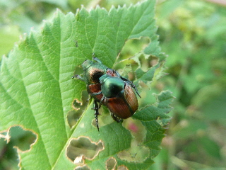
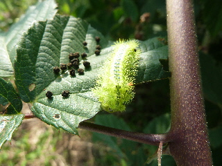
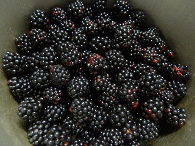
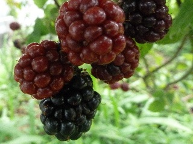
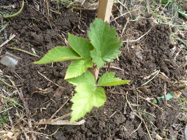
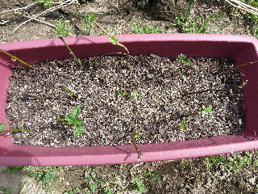

遊びで植物を育てよう
2014/07/19
ブラックベリーの害虫。
あまり手間がかからないブラックベリーですが、最近嫌な虫がいます。

マメコガネが葉っぱを食べています。
そこそこ数はいますが、ブラックベリーが巨大に育っているので、あんまり気にはなりません。

問題はこいつです。
ヒロヘリアオイラガっていうんでしょうか。
この毛虫がやっかいです。
毒があって痛いです。
さわったつもりがなくても、収獲の時に触れてたりして、気づいたら肌が腫れて痒くなってたりします。
ムヒの高いやつやオロナイン使ってもなかなか治らない。
ブラックベリーに限らないですが、毛虫がいそうな場所は注意して作業しないといけないですね。
美味しそうな実があるからって、木の下にもぐり込んじゃだめですね。
取りやすい場所の実だけ採るのが安全です。
【ブラックベリーTOP】 【果物TOP】 【園芸TOP】
2014/07/12
ブラックベリーを沢山収穫しました。
鍋に半分位のブラックベリーを収穫しました。

これから煮ます。
ジャムにしてもいいですが、それだと甘すぎて量を沢山食べれないので、コンフィチュールっぽくします。
ドンドン食べて、また次を収獲します。
【ブラックベリーTOP】 【果物TOP】 【園芸TOP】
2014/07/06
ブラックベリーが黒くなってきました。
まだ数は少ないですが、黒いものが出てきました。

黒いのを食べた感想ですが、爽やかな甘さでした。
ジャムにするのが一番かな。
今年は大量に採れそうなので、色んな食べ方に挑戦できます。
【ブラックベリーTOP】 【果物TOP】 【園芸TOP】
2014/06/15
挿し木のブラックベリーを地植えにしました。
挿し木のブラックベリーに根が付いていそうなので、もう植え替えても大丈夫そうです。

プランターから引っこ抜いて地植えにしました。
プランターの中で根がしっかり張っていたので、植え替えの時にだいぶ痛めてしまいました。
大丈夫かな？
この夏にどれくらい大きくなるかな。
【ブラックベリーTOP】 【果物TOP】 【園芸TOP】
2014/05/03
ブラックベリーの挿し木の結果
2月に挿し木したブラックベリーですが、5月になっても枯れていないので根が付いたかな？

今のところ15本中9本で若葉が出ています。
枝が緑色してて、これから芽がでるかも？ってのもあるので、2/3くらいの確率ですね。
これだけ増えればもう当分ブラックベリーを増やす必要はなさそうです。
植え替える場所を考えないと。
数があるので、地植えも鉢植えもやりたいな。
【ブラックベリーTOP】
【果物TOP】
【園芸TOP】
巨大化に注意しましょう。
【おいしいものを食べよう。】【たくさん寝よう。】
【ソロ活をしよう!】【季節感のあることをしよう。】【動画視聴はほどほどに。】【当サイトの全てのコンテンツは無断転載禁止です。】